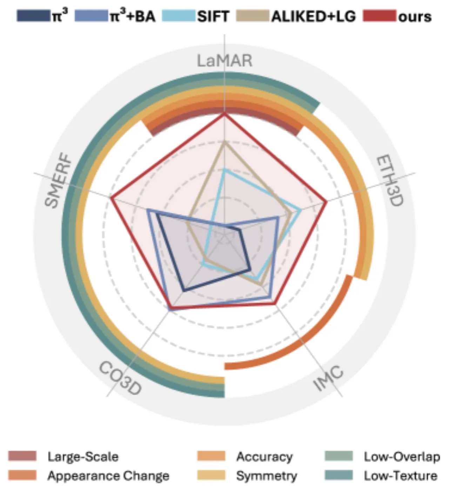
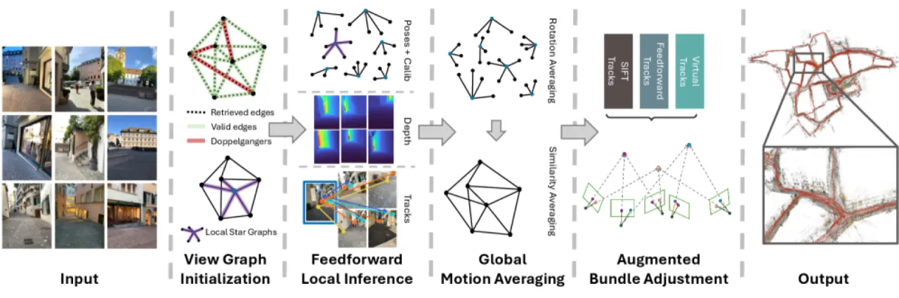
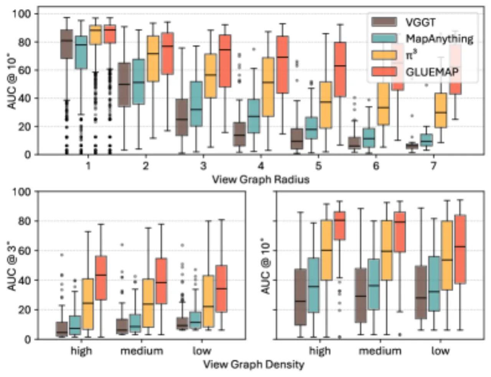
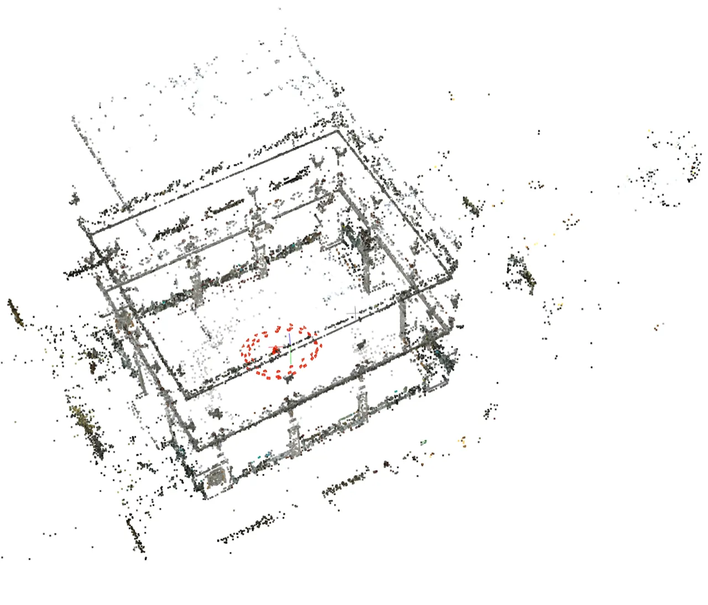
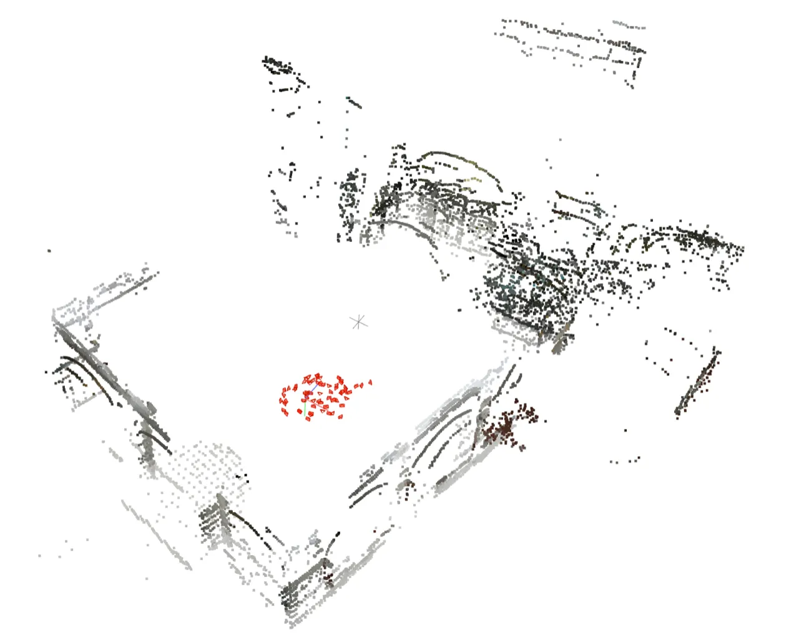

GlueMap 系统性地分析了经典 Structure-from-Motion 与前馈式三维重建各自的失败场景， 提出一套结合两类方法优势的混合 pipeline，在 5 个具有代表性的基准测试上均达到 state-of-the-art， 并可扩展到上万张图像的大规模场景。
经典 SfM（以 COLMAP 为代表）在标准重建场景表现优异，但在低纹理、有限重叠度、对称结构等场景下系统性失效。 前馈神经网络方法（如 π³）在这些困难场景中展现出惊人的鲁棒性，却在可扩展性、精度和鲁棒性上远不及经典方法。 本文提出 GlueMap，系统性地整合两类方法的互补优势。
"We systematically analyze these limitations and propose a new Structure-from-Motion pipeline by combining the respective strengths of classical and feedforward methods."

GlueMap 将整个 SfM 流程分解为四个阶段：首先构建可靠的视图图， 然后利用前馈网络进行局部推断，再通过全局运动平均整合局部结果， 最后用增强型 Bundle Adjustment 精化位姿与三维结构。

使用 SALAD 进行可扩展图像检索，通过 Doppelganger++ 过滤掉对称结构带来的虚假对， 并用动态阈值保证图的连通性。这一步骤确保视图图既覆盖所有图像，又不受对称陷阱干扰。
将视图图分解为以每张图为中心的局部 star graph，对每个子图独立调用 π³ 前馈网络获得局部三维重建。 随后通过"在 1 像素半径内 snap 到 SIFT 关键点"将不同子图的轨迹对齐， 并用前向-后向深度一致性检验剔除误匹配。
依次执行三步融合：(a) 内参平均：以中位数焦距作为初始化； (b) 旋转平均（rotation synchronization）：最小化测地误差； (c) 相似变换平均（similarity averaging）：统一各局部重建的尺度，恢复全局相机中心。
引入三类 track 同时参与 BA 优化：经典 SIFT 匹配提供高精度约束； π³ 输出的 deep tracks 在困难场景提供额外覆盖； 通过对相邻视图重投影采样像素构造 virtual tracks（虚拟轨迹） 填补稀疏区域的约束空洞。

在 5 个基准数据集（ETH3D、IMC2021、CO3Dv2、SMERF、LaMAR）上与 π³、π³+BA、SIFT、ALIKED+LG 对比， 覆盖高精度室内外、互联网照片、低纹理物体、低重叠室内和大规模场景等多样化挑战。
| 方法 | AUC@1° | AUC@3° | AUC@5° |
|---|---|---|---|
| SIFT | 45.6 | 62.2 | 66.7 |
| ALIKED+LG | 42.9 | 62.1 | 67.4 |
| π³ | 13.2 | 36.1 | 48.9 |
| π³ + BA | 30.6 | 55.1 | 65.1 |
| GlueMap | 53.0 | 76.9 | 83.6 |
| 方法 | Minimal Overlap | Low Overlap |
|---|---|---|
| SIFT | 1.8 | 1.8 |
| π³ | 51.7 | 49.8 |
| GlueMap | 82.0 | 92.4 |
| 场景 | 图像数 | SIFT | π³ | GlueMap |
|---|---|---|---|---|
| CAB | 6,587 | 0.6 | OOM | 4.5 |
| HGE | 7,553 | 2.6 | OOM | 37.3 |
| LIN | 9,319 | 4.6 | OOM | 37.3 |
OOM = Out of Memory（RTX 4090 24GB 显存耗尽）；GlueMap 是唯一能处理大规模场景的方法。
| 方法 | 10 imgs | 20 imgs | 40 imgs |
|---|---|---|---|
| SIFT | 25.8 | 35.1 | 50.0 |
| π³ | 48.2 | 46.4 | 47.1 |
| GlueMap | 54.8 | 56.7 | 58.7 |


| 组合 | ETH3D AUC@1° |
|---|---|
| Deep Tracks + SIFT + Virtual Tracks（完整） | 52.6 |
| Deep Tracks + Virtual Tracks（去掉 SIFT） | 45.4 |
| SIFT + Virtual Tracks（去掉 Deep Tracks） | 46.6 |
| Deep Tracks + SIFT（去掉 Virtual Tracks） | 54.8 |
三类 track 各有贡献，在低重叠场景（SMERF）中 virtual tracks 尤为关键，完整组合在不同场景下取得最佳综合表现。
GlueMap 将 π³ 作为前馈推断骨干，其性能上限受限于 π³ 本身的覆盖范围。 当前实现不支持鱼眼（fisheye）图像，这限制了在自动驾驶和机器人领域的直接应用。
Augmented Bundle Adjustment 的公式化设计依赖视差信息；对于相机原地旋转（purely rotational motion）的图像序列， 该方法无法正确工作。
GlueMap 本质上是多个模块（SALAD、Doppelganger++、π³、SIFT、global averaging）的工程组合， 而非单一的可端到端训练模型。 随着前馈基础模型（如 MASt3R、π³）持续迭代，组件替换可带来直接性能提升，但也引入了维护成本。